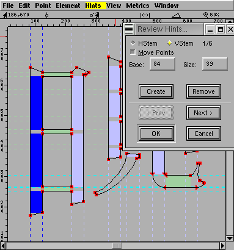

The Hints Menu¶
This menu is only present in the outline glyph view and the font view.
-
AutoHint The Auto Hint command causes FontForge to throw away any existing hints for the glyph and guess an new ones. In the outline view this operates on the current glyph, in the font view it operates on all selected glyphs.
FontForge will do a better job hinting a font if you have previously set the BlueValues, StdVW and StdHW fields in Element->Font Info->PS Private. These in turn depend on the hints so it is best to autohint the entire font, then set the above values, and then autohint the font again.
If you wish to use AutoInstr below you should first AutoHint your font with File->Preferences->PS Hints->Detect Diagonal Stems enabled.
-
Hint Substitution Pts In the font view this figures substitution points for all selected glyphs. In the outline glyph view, this figures substitution points for the current glyph using the current hint set.
-
Auto Counter Attempt to figure out counter groups for the selected glyphs (font view) or the current glyph (outline glyph view).
-
Don't AutoHint Tells FontForge not to do any implicit hinting on the selected glyphs. (FontForge will normally perform an autohint on a glyph if the glyph’s contours have changed since it was last hinted and the user has not explicitly changed the hints). The user may turn this flag off by invoking AutoHint explicitly.
In the outline glyph view, behavior is a bit more complicated. This command will toggle the current setting of the “Don’t AutoHint” flag. If the flag is currently on the menu entry will be checked.
-
AutoInstr The Auto Instr command is only available in quadratic fonts and is used to generate truetype instructions. It is designed to produce instructions based on PostScript information, so please insure that all glyphs are correctly hinted and that the PostScript private dictionary has been filled in. (I know the instructions aren’t used by PostScript, but the information needed to generate the instructions is clearly expressed in the PostScript data).
If you are using AutoHint to generate hints, please insure that the diagonal hint preference item is turned on (File->Preferences->PS Hints->Detect Diagonal Stems)
-
Edit Instructions... Only available in the outline and font views, and only in quadratic fonts. This dialog shows any truetype instructions associated with this glyph, and allows you to edit them.
Note there are some glyphs for which you cannot write instructions if they contain references that cannot be represented in TrueType. If a glyph contains a reference that is scaled by a factor of 2 or more, or if a glyph contains both a reference and a contour then you may not generate instructions for it. You can either:
Unlink all references
(in the case of a glyph with references and contours) Place all the contours into a new glyph and make a reference to that glyph. (So the composite glyph will now contain only references).
-
Debug... Only available in the outline view, and only if you have linked with a version of freetype with the bytecode interpreter and only in quadratic fonts. This allows you to debug truetype programs.
-
Edit fpgm... Only available in the font view, and only in quadratic fonts. This dialog shows any truetype instructions in the ‘fpgm’ table, and allows you to edit them.
-
Edit prep... Only available in the font view, and only in quadratic fonts. This dialog shows any truetype instructions in the ‘prep’ table, and allows you to edit them.
-
Edit cvt... Only available in the font view, and only in quadratic fonts. This dialog shows the initial values in the ‘cvt ‘ table, and allows you to edit them. You can also add a brief comment to describe what each entry is used for.
-
Suggest Deltas... Brings up a dialog which will help you search for places where truetype delta instructions might be useful.
-
Remove Instr Tables If the font contains a ‘fpgm’, ‘prep’, ‘cvt ‘ or ‘maxp’ table, then this command will remove them. This should be done in conjunction with Hints->Clear Instructions, otherwise any remaining instructed glyphs will fail to work.
-
Clear Hints Clears all hints in all selected glyphs.
-
Clear Instructions Clears any truetype instructions associated with the selected glyphs.
-
Clear HStem Removes all Horizontal Stem hints from the current glyph.
-
Clear VStem Removes all Vertical Stem hints.
-
Clear DStem Removes all Diagonal Stem hints.
-
Add HHint If there are two points selected (exactly two) and if they have different y positions, then this will create a Horizontal Stem Hint starting at the lower one of the two going up to the upper one.
-
Add VHint If there are two points selected (exactly two) and if they have different x positions, then this will create a Vertical Stem Hint starting at the leftmost one of the two going right to the rightmost one.
-
Add DHint If there are exactly 4 points selected and they can describe a diagonal stem hint then this menu item will be active and will add it.
-
Create HHint Brings up a dialog allowing you to specify exactly where and how wide you want a Horizontal Stem Hint.
-
Create VHint Brings up a dialog allowing you to specify exactly where and how wide you want a Vertical Stem Hint.
-
Review Hints - 
Brings up a dialog allowing you to examine (and modify) all horizontal/vertical stem hints (not diagonal). The currently active hint is picked out in either dark blue or dark green.
The Histograms SubMenu¶
-
HStem Brings up a dialog displaying a histogram of the horizontal stem widths of all selected glyphs.
-
VStem Brings up a dialog displaying a histogram of the vertical stem widths of all selected glyphs.
-
BlueValues Brings up a dialog displaying a histogram of the vertical maxima and minima of all selected glyphs.